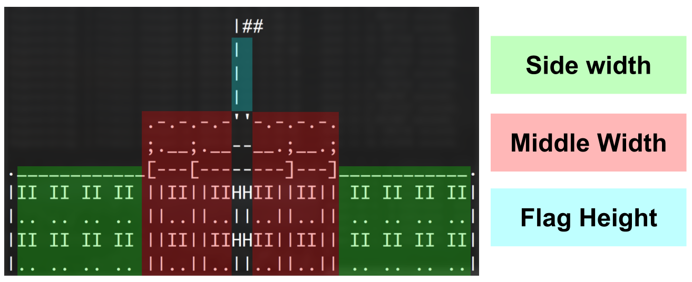
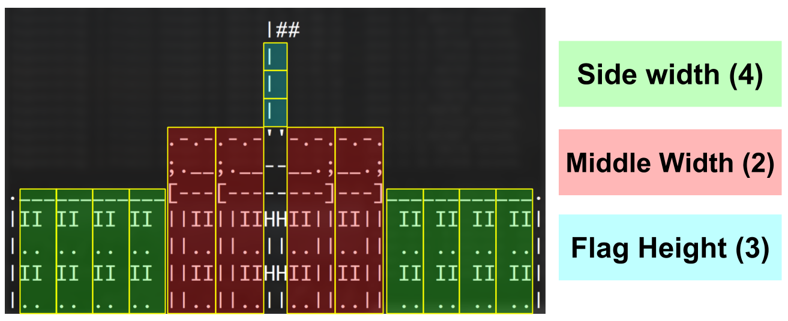
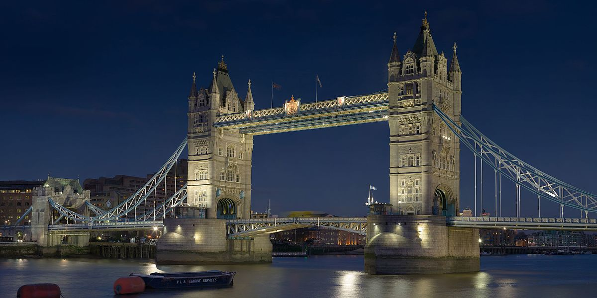
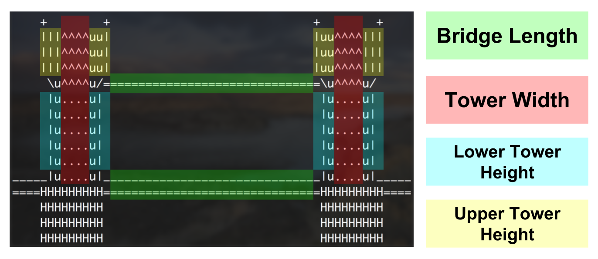

In this PA, you will be writing multiple programs that print out ascii art of famous landmarks. Each of these programs should accept one or more values from the user which are used to adjust the size of the printout. You should write two programs total.
In this program, you will print out ascii art of the white house (pictures above).
Name your progam white_house.py.
Your program should ask the user for three numbers: the width of the sides, the width of the middle, and the flag height.
The side width will increase the width of the left and right sides in accordance with the number provided.
The middle with will control the width of the middle section of the white house.
The flag height will control the height of the flag pole.
Below is a diagram showing what component of the house each input value determines.

The house shown in the image has a side with of 4, a middle width of 2, and a flag height of 3. When the width of the sides increase, it actually increases by more than one character. It actually increases by 3 characters on each side, following the pattern of windows and wall. Similarly for the middle. The width increases by 4 characters on each side of the center of the building. See the image below for reference.

Also, the height of the white house should be a function of the two width inputs. The formula to determine the height is:
Use that calculation to determine how many rows tall the house should be!
Below are just a few examples of this program running with different input values provided. You will be able to use the differ and/or gradescope to test for correct output.
Specify side width:
1
Specify middle width:
1
Specify flag height:
1
|##
|
.-.-''-.-.
;.__--__.;
.___[--------]___.
|II ||IIHHII|| II|
|.. ||..||..|| ..|
Specify side width:
3
Specify middle width:
2
Specify flag height:
4
|##
|
|
|
|
.-.-.-.-''-.-.-.-.
;.__;.__--__.;__.;
._________[---[--------]---]_________.
|II II II ||II||IIHHII||II|| II II II|
|.. .. .. ||..||..||..||..|| .. .. ..|
|II II II ||II||IIHHII||II|| II II II|
|.. .. .. ||..||..||..||..|| .. .. ..|

In this program, you will print out ascii art of the tower bridge in London (pictured above).
Name your progam tower_bridge.py.
Your program should ask the user for four numbers; The bridge length, lower tower height, upper tower height, and tower width.
Below is a diagram showing what component of the ship each input value determines.

(Don’t worry about trying to make your tower bridge printout match the above image. Instead, use the test cases)
Below are serveral examples of this program running with different input values provided.
enter bridge length:
10
lower tower height length:
3
upper tower height length:
2
enter tower width:
1
+ + + +
|||^uu| |uu^|||
|||^uu| |uu^|||
\u^u/================\u^u/
|u.u| |u.u|
|u.u| |u.u|
|u.u| |u.u|
_____|u.u|________________|u.u|_____
====HHHHHH================HHHHHH====
HHHHHH HHHHHH
HHHHHH HHHHHH
HHHHHH HHHHHH
enter bridge length:
20
lower tower height length:
5
upper tower height length:
1
enter tower width:
2
+ + + +
|||^^uu| |uu^^|||
\u^^u/==========================\u^^u/
|u..u| |u..u|
|u..u| |u..u|
|u..u| |u..u|
|u..u| |u..u|
|u..u| |u..u|
_____|u..u|__________________________|u..u|_____
====HHHHHHH==========================HHHHHHH====
HHHHHHH HHHHHHH
HHHHHHH HHHHHHH
HHHHHHH HHHHHHH
Notice that the overall size of the towers can be adjusted both vertically and horizontally.
You should support values of at least 0-50 for all inputs. You don’t have to test every combination, but you should test a few.
You should also include a comment at the top of the code file. The comment should include your name and a short description of what the program does. Below is a template you may use:
###
### Author: Your Name Here
### Description: Describe your program with one
### or more sentences of text.
###
You should not use any python libraries or features that will not have been covered by the time this PA is due. You should be using string multiplication to get the sizing of the output correct. You are not allowed to use if-statements or loops. We will be checking that your code fulfills the requirements, has good style, etc. Receiving full points on all of the Gradescope test cases does not guarantee you an A.
This PA is due on Tuesday, January 22, at 7pm. Turn both programs via on Gradescope. You should make sure that your final submission passes all of the test cases. Passing all test cases does not guarantee a perfect grade. Your code will also be graded on style and formatting.